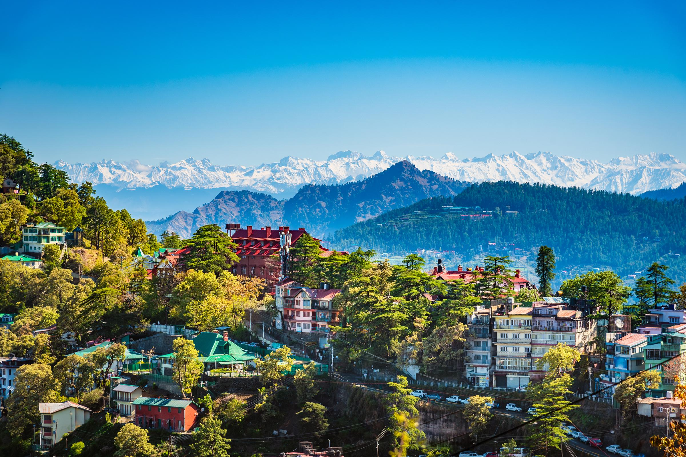
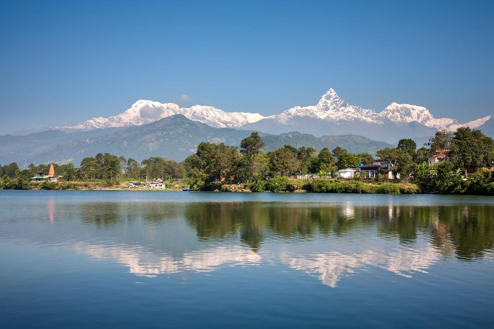
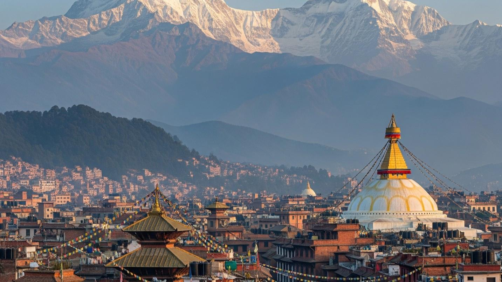
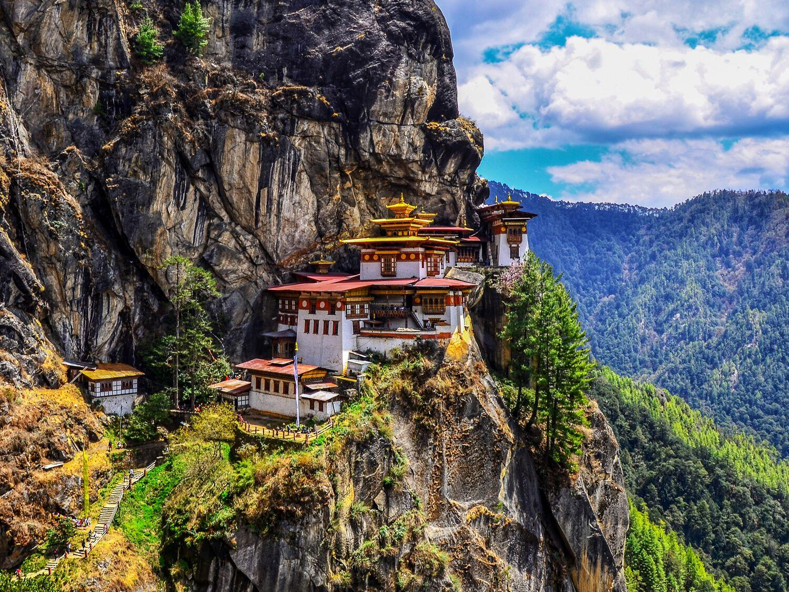
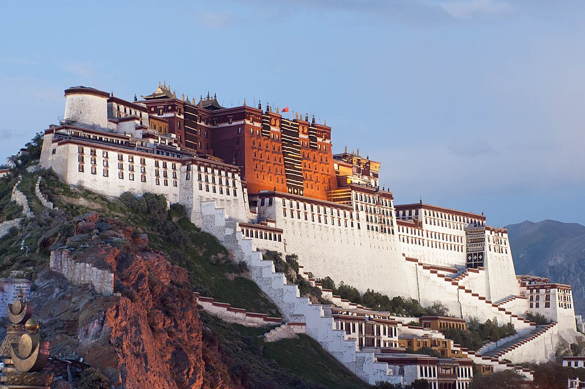

popular places to visit in the Himalayas
1.Famous Himalayan Destinations in India

Manali is a resort town, near Kullu town in the Kullu district in the Indian state of Himachal Pradesh. It is situated at the northern end of the Kullu Valley, formed by the Beas River. The town is located in the Kullu district, approximately 270 kilometres (170 mi) north of the state capital of Shimla and 544 kilometres (338 mi) northeast of the national capital of New Delhi. Manali is a popular tourist destination in India and serves as the gateway to the Lahaul and Spiti district as well as the city of Leh in Ladakh.
Shimla is the summer capital and largest city of northern Indian state Himachal Pradesh. It is the state's most developed city and its centre of commerce, culture and education. Formerly Simla, the city was built across seven spurs in the southwestern Himalayas during Company rule. It became the summer capital of British India in 1864 and hosted the 1945 Simla Conference during Indian independence negotiations.


Spiti (pronounced as piti in Bhoti language) is a high-altitude region of the Himalayas, located in the north-eastern part of the northern Indian state of Himachal Pradesh. The name "Spiti" means "The middle land", i.e. the land between Tibet in China and India. Spiti incorporates mainly the valley of the Spiti River, and the valleys of several rivers that feed into the Spiti River. Some of the prominent side-valleys in Spiti are the Pin valley and the Lingti valley. Spiti is bordered on the east by Tibet, on the north by Ladakh, on the west and southwest by Lahaul, on the south by Kullu, and on the southeast by Kinnaur. Spiti has a cold desert environment. The valley and its surrounding regions are among the least populated regions of India. The Bhoti-speaking local population follows Tibetan Buddhism.
Gulmarg (also known as Gulmarag, lit. 'meadow of flowers' in Kashmiri) is a hill station and a notified area committee in Baramulla district of the Indian union territory of Jammu and Kashmir. It is located in the Indian-administered part of Kashmir, close to the Line of Control that serves as the de facto border between India and Pakistan. It is in the Pir Panjal Range in the Western Himalayas within the boundaries of the Gulmarg Wildlife Sanctuary. Gulmarg is situated at an altitude of 2,650 m (8,690 ft), and is a popular tourist and skiing destination in the Kashmir Valley.


Leh (Ladakhi: སླེ;) is a city in Indian-administered Ladakh in the disputed Kashmir region. It is the largest city and the joint capital of Ladakh. Leh, located in the Leh district, has been the capital of Ladakh since the medieval period and was historically capital of the Kingdom of Ladakh. The seat of the kingdom, Leh Palace, the former residence of the royal family of Ladakh, was built in the 17th century and is frequently contrasted with the Potala Palace in Tibet. Leh is at an altitude of 3,524 m (11,562 ft), and is connected via National Highway 1 to Srinagar in the southwest and to Manali in the south via the Leh-Manali Highway (part of National Highway 3).
2.Beautiful Himalayan Destinations in Other Countries
Pokhara (Nepali: पोखरा) is a metropolitan city located in central Nepal, which serves as the capital of Gandaki Province. Named the country's "capital of tourism", it is the second largest city after Kathmandu, with 600,051 inhabitants living in 120,594 households as of the 2021 census. Pokhara is located 200 kilometres (120 miles) west of the capital, Kathmandu, on the shore of Phewa Lake, and sits at an average elevation of approximately 822 m above sea level. The Annapurna Range, with three out of the ten highest peaks in the world—Dhaulagiri, Annapurna I and Manaslu—is within 15–35 mi (24–56 km) aerial range from the valley.


Kathmandu is the capital and largest city of Nepal, situated in the central part of the country within the Kathmandu Valley. The city is in Kathmandu District. Kathmandu is the main governmental, financial, industrial, and cultural centre of Nepal.[5] As per the 2021 Nepal census,[3] it has a population of 845,767 residing in 105,649 households, with approximately 4 million people in the surrounding metropolitan area. The city stands at an elevation of 1,324 metres (4,344 ft) above sea level.[6] From ancient times until the medieval period, Kathmandu was known as Kantipur and is also referred to as Kasthamandap.
Paro, town, western Bhutan, in the Himalayas on the Paro River. Centered on Fort Paro, a large rectangular building with a seven-story tower, it was the main cultural, commercial, and political center of the country until the national capital was settled at Thimphu in 1962; Paro remains the summer capital. It is connected by the Indo-Bhutan National Highway to Phuntsholing on the Indian border, and it has an air landing strip. The Paro River valley, with temperatures ranging from an average of 40 °F (4 °C) in January to 75 °F in July and annual rainfall averaging 30–35 inches (760–890 mm), is intensively cultivated; it is one of the most densely settled regions of Bhutan. Pop. (latest est.) 10,000.


Tibet is an autonomous region of the People's Republic of China. It was established in 1965 to replace the Tibet Area, a former administrative division of the Republic of China.
The current borders of the Tibet Autonomous Region were generally established in the 18th century[9] and include about half of cultural Tibet, which was at times independent and at times either under the Mongol-led Yuan dynasty or Qing dynasty rule. The TAR spans more than 1,200,000 km2 (460,000 sq mi) and is the second-largest province-level division of China by area. It has a harsh and rugged terrain, with a population of 3.6 million people or approximately 3 inhabitants per square kilometre (7.8/sq mi).